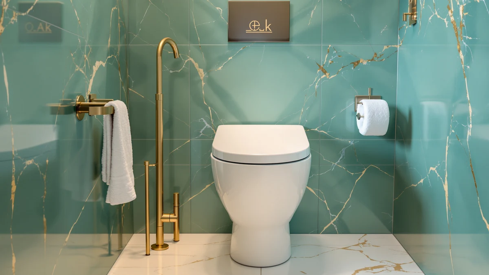

How to Unclog a One Piece Toilet (2026)
Prices and picks verified as of August 2026. Independent, reader-supported reviews.


Things to Know Before You Buy
- Shut off the water before you start. Closing the supply valve behind the toilet is the first move in any one piece toilet unclogging job, since it stops the bowl from overflowing while you work.
- A flange plunger outperforms a cup plunger. Its extended rubber flap seals a one piece bowl's curved trapway far better than a flat cup design ever will.
- Hot water and dish soap loosen paper clogs. The soap breaks down fibers while the heat softens the blockage before you plunge again.
- A toilet auger clears clogs a plunger can't reach. Its flexible cable extends past the trap and into the drain line beyond it.
- Chemical drain cleaners can damage a one piece bowl's glaze and seals. Skip them and stick to mechanical methods instead.
Knowing how to unclog a one piece toilet saves you a service call and usually costs less than five dollars in supplies you probably already own. A one piece toilet fuses the tank and bowl into a single skirted unit, so the trapway curves in a way that traps waste and paper more easily than some two piece designs do. That same curve is what makes a plunger effective once you use it correctly, and in most cases you can clear a clog in under thirty minutes without ever removing the toilet from the floor. This guide walks through five steps, in order, from the first plunge to the moment the bowl drains clean again.
Most clogs give way to a flange plunger and a few minutes of patience, but a handful of situations call for extra tools or a professional. If the bowl fills near the rim after a flush, stop and let the water recede before you try again, since a second flush at that point can send water onto your floor. A toilet auger reaches clogs that sit beyond the trap, where a plunger alone cannot generate enough force to move a blockage. And once you have tried plunging, hot water, and an auger and the bowl still won't drain, the clog likely sits deeper in the branch line, which is a job for a licensed plumber rather than a weekend fix.
What You'll Need
- Supplies: dish soap, hot water, and rubber gloves, all things you likely already have under the sink
- Tools: a flange plunger and a toilet auger, the two that handle nearly every clog on their own
Step 1: Shut off the water supply
Locate the shutoff valve on the wall or floor behind your one piece toilet and turn it clockwise until it stops. This cuts the water supply to the tank, so an accidental flush during the process doesn't send more water into an already full bowl. This first move keeps a one piece toilet unclogging job from turning into a bigger mess if someone flushes by mistake.
Lay old towels around the base of the toilet. A one piece bowl sits low to the floor, and any water that splashes during plunging tends to spread across tile or vinyl quickly. If the bowl is already filled near the rim, scoop out some water with a small cup or a wet/dry vacuum first, since a bowl that's too full leaves no room for the plunger to create pressure.
Step 2: Plunge with a flange plunger
Fit the extended rubber flap of a flange plunger into the drain opening at the bottom of the bowl. That flap folds out to seal a toilet's curved trapway far more effectively than a standard cup plunger, which was never designed to unclog a one piece toilet's narrow trapway in the first place.
Push down slowly to force air out of the plunger, then pull up and push down in a steady rhythm for fifteen to twenty seconds. Keep enough water in the bowl to cover the plunger head the whole time, since air in the seal wastes your effort. Repeat this cycle three or four times, checking the water level after each round.
If the water drains and refills to a normal level, flush once to confirm the clog cleared. If the bowl still holds standing water after several rounds, move to the next step rather than plunging indefinitely.
Step 3: Add hot water and dish soap
Heat a full kettle of water until it's hot but not boiling, since boiling water can crack the porcelain glaze on a one piece bowl. Squeeze a generous amount of dish soap directly into the drain opening, then pour the hot water in from waist height so it drops with some force.
Let the mixture sit for ten minutes. The soap lubricates the clog while the heat softens paper and organic waste, which makes the blockage easier to break apart on your next attempt. This step alone often finishes the job of unclogging a one piece toilet without a single tool.
Plunge again using the same technique from step two. If the water drains fully at this point, turn the supply back on and flush twice to confirm the line is clear before you move on.
Step 4: Run a toilet auger through the trap
When plunging and hot water don't clear the clog, a toilet auger reaches past the trap where a plunger's force can't travel. Feed the auger's protective sleeve into the drain opening and turn the crank clockwise to extend the cable further into the trapway. This is the tool most plumbers reach for when a one piece toilet won't unclog with a plunger alone.
When you feel resistance, keep cranking gently rather than forcing the cable, since a rigid push can scratch the porcelain or jam the cable in the bend. Once the cable meets the clog, keep turning the handle to break the blockage apart or hook onto it so you can pull it back.
Withdraw the cable slowly while continuing to crank, then flush to check whether water drains at a normal rate. If a foreign object such as a toy or excess wipes caused the clog, the auger will often bring it back up the drain.
Step 5: Test the flush and clean up
Open the shutoff valve behind the toilet and let the tank refill. Flush the toilet twice in a row and watch the bowl empty completely each time, since a slow drain after the first flush can signal a partial clog that needs another round of plunging.
Rinse the plunger and auger cable in the tub or with an outdoor hose rather than the sink, and dry them before you put them away so they don't grow mold in storage. Wipe down the floor around the base with a disinfecting cleaner, especially if you had to remove standing water earlier.
If the bowl still drains slowly after two full flushes, repeat steps two through four once more. A clog that survives a plunger, hot water, and an auger usually sits further down the branch line, which is when calling a licensed plumber makes more sense than continuing to unclog a one piece toilet yourself.
Common Mistakes to Avoid
These mistakes are the most common reasons attempts to unclog a one piece toilet drag on longer than they should. The first is reaching for a chemical drain cleaner before trying mechanical methods. These products sit in the bowl and generate heat as they react, which can crack the glaze on a one piece toilet or damage the wax ring seal underneath. If the chemical doesn't clear the clog, a plumber then has to work around a bowl full of caustic liquid, which turns a simple job into a hazardous one.
Flushing repeatedly when the bowl is already full causes the second most common problem. Each flush adds another gallon or more of water on top of a blockage that hasn't moved, and once the water reaches the rim, the next flush sends it onto your floor. Stop after one flush that doesn't drain and switch to a plunger instead.
Using a cup plunger instead of a flange plunger also slows people down. The flat cup style can't form a tight seal against the curved trapway inside a one piece bowl, so much of the plunging force escapes instead of pushing into the clog. A flange plunger costs about the same and clears clogs in a fraction of the strokes.
Finally, people often stop after a single round of plunging and assume they need a plumber. Most clogs need three or four full plunge cycles, sometimes combined with hot water and soap, before they break apart. Give the process the full sequence of steps before you decide a professional visit is necessary.
Our Top Picks
If you find yourself needing to unclog a one piece toilet on a repeat basis, an aging or narrow trapway design may be the underlying culprit. These three one piece toilets use a wider trapway and stronger flush engineering, which cuts down on repeat clogs.

Editor's Pick
DeerValley Elongated One Piece Toilet
A fully glazed 2-inch trapway and a powerful gravity flush make this DeerValley model far less prone to clogging than standard one piece toilets.
$239.19
Check Price on Amazon
Best Value
Elongated One Piece Toilet with
A dual-flush valve and a skirted trapway give you strong waste clearance at a price close to entry-level models.
$239.99
Check Price on Amazon
Premium Choice
HOROW HR-ST076W Elongated Toilet with
HOROW's tornado-style flush uses less water per cycle while still clearing waste in a single pass, which keeps this compact model comfortable in smaller bathrooms.
$211.50
Check Price on AmazonFrequently Asked Questions
What is the fastest way to unclog a one piece toilet?
A flange plunger clears most one piece toilet clogs within a few minutes. Insert it fully into the drain, keep enough water in the bowl to cover the head, and plunge in firm, steady strokes for fifteen to twenty seconds before checking the water level.
Why do one piece toilets clog more than two piece models?
A one piece toilet's trapway is molded as part of the bowl, and some manufacturers narrow that path to keep the flush skirt compact. A narrower trapway holds waste and paper closer to the surface, which is why this type clogs somewhat more easily than wider two piece trapways.
Can I use a wire hanger instead of a toilet auger?
Skip the wire hanger. Its sharp edges scratch porcelain glaze and can puncture the wax ring seal beneath the toilet, which leads to a leak that costs far more to fix than a ten-dollar toilet auger.
How do I know if I need to remove the toilet to clear the clog?
If a plunger, hot water, and a toilet auger all fail after several attempts, the blockage likely sits in the branch drain past the toilet's own trap. At that point a plumber typically pulls the toilet to access the drain directly rather than continuing to work through the bowl.
Is it safe to use bleach to unclog a one piece toilet?
No. Bleach doesn't break down solid waste or paper, and pouring it into a bowl with standing water can create dangerous fumes if it mixes with other cleaning products already in the tank or bowl. Stick to a plunger, hot water, and dish soap instead.
Verdict
Most clogs in a one piece toilet clear within thirty minutes once you work through these five steps in order: shut off the water, plunge with a flange plunger, add hot water and dish soap, run a toilet auger if the clog holds, then flush twice to confirm the line is clear. The order matters, since each step targets a different part of the trapway, and jumping straight to an auger before you plunge often wastes effort on a clog that soap and hot water would have broken apart on their own. Knowing how to unclog a one piece toilet also means knowing when to stop and call a plumber, which is usually after a full round of plunging, soaking, and augering leaves the bowl still draining slowly. If clogs keep coming back no matter how carefully you flush, the trapway itself may be part of the problem. A model like the DeerValley Elongated One Piece Toilet uses a wider, fully glazed trapway that clears waste in fewer flushes and clogs far less often than older, narrower designs.